인증서 관리 플랫폼 · 인수 테스트 결과
관리자 관점 운영 시나리오 12개 + 실제 Claude QA · 실행 2026-11-01 01:38 UTC · 실제 PC 서버판 + Chromium 화면 조작(자동 기록) · ← 시연 사이트
테스트 환경과 데이터
서버 4대(nginx·Apache·Tomcat·IIS)를 흉내 낸 폴더에 실제 형식의 인증서 13개(체인 PEM·DER·PKCS#12·공동인증서·손상 파일·개인키 파일·백업 확장자·2025년 사본)를 두고, 담당자가 손으로 관리해 온 엑셀 관리대장(제목 행·점 날짜·담당자 누락·날짜 오타·이메일 오타·중복 행·폐기 서버 포함 10행)을 사용했습니다. 사용자는 관리자 1·담당자 4·검토자·승인자·조회자 8명입니다.
| 서버 경로 | 종류 | 인증서(CN) | 남은 일수 |
|---|---|---|---|
| web01-nginx/etc/nginx/ssl/shop.skax-demo.co.kr/fullchain.pem | leaf+chain | shop.skax-demo.co.kr, DigiCert Global G2 TLS RSA SHA256 2020 CA1 | 210 |
| web01-nginx/etc/nginx/ssl/shop.skax-demo.co.kr/privkey.pem | key-only | ||
| web01-nginx/etc/letsencrypt/live/api.skax-demo.co.kr/cert.pem | leaf | api.skax-demo.co.kr | 20 |
| web01-nginx/etc/letsencrypt/live/api.skax-demo.co.kr/cert.pem.bak | ignored-ext | ||
| web02-apache/etc/httpd/ssl/www.skax-demo.co.kr.crt | leaf | www.skax-demo.co.kr | 6 |
| web02-apache/etc/httpd/ssl/old/www.skax-demo.co.kr_2025.crt | old-version | www.skax-demo.co.kr | -359 |
| web02-apache/etc/httpd/ssl/wildcard_skax-demo.cer | leaf-der | *.skax-demo.co.kr | 380 |
| web02-apache/etc/httpd/ssl/corrupted.crt | broken | ||
| was01-tomcat/opt/tomcat/conf/ssl/pay.skax-demo.co.kr.p12 | pfx | pay.skax-demo.co.kr, DigiCert Global G2 TLS RSA SHA256 2020 CA1 | 45 |
| was01-tomcat/opt/tomcat/conf/ssl/erp.skax-demo.co.kr.p12 | pfx | erp.skax-demo.co.kr | -3 |
| win01-iis/C/inetpub/certs/portal.pfx | pfx | portal.skax-demo.co.kr | 15 |
| win01-iis/C/inetpub/certs/hr.pfx | pfx-unknown-pw | hr.skax-demo.co.kr | 120 |
| win01-iis/Users/admin/NPKI/yessign/USER/signCert.der | leaf-der | 홍길동()0012345678 | 90 |
배포 범위 (명확히)
플랫폼: 배포 승인 시 단계별 배포 폴더 deploy/<개발·테스트·교육·운영>/<인증서명>/에 인증서와 DEPLOYED.json(지문·만료일)을 기록하고, 이전 파일은 history/에 보관해 원복 시 되돌립니다.
서버 Agent(추가): 배포 단계를 지정해 등록한 서버는 Agent가 승인된 배포를 직접 설치합니다 — 백업 → 서버 인증서 교체(중간 CA 유지) → 설정 검사(nginx -t 등) → 재적용 → 서버가 실제로 보내는 인증서 지문 확인 → 실패하면 백업으로 자동 원복 후 결과 보고. 개인키는 서버 밖으로 나가지 않고, 새 키를 발급하는 갱신은 담당자가 설치합니다.
서버 Agent 원격 수집·배포 18/18
원격 서버 2대(web01 nginx 체인+개인키, was01 Tomcat PFX)를 흉내 낸 환경에서 서버 Agent가 토큰으로 접속해 수집·업로드하고, PFX 비밀번호는 보관함에서 Agent 공개키로 암호화 전달받아 엽니다. 승인된 운영 배포를 실제 TLS 서버에 설치하고 응답 지문을 확인하며, 키가 맞지 않는 인증서는 설정 검사에서 막혀 자동 원복됩니다. AWS EC2 실서버 테스트 전 단계 검증입니다.
| 검증 항목 | 실제 결과 | 판정 |
|---|---|---|
| 서버 Agent 등록(토큰 1회 표시, 목록엔 해시도 안 보임) | was01:-, web01:prod | 통과 |
| 잘못된 토큰 거부 | 401 | 통과 |
| 보관함 등록(호스트/경로 범위) | was01/tmp/cert_remote/was01/opt/tomcat/conf/ssl | 통과 |
| web01 수집: 체인 2건(서버+중간 CA) 승인 대기, 개인키 파일은 대상 아님 | 업로드: 파일 1개 → 승인 대기 2건(갱신본 0) · 이미 관리 중 0 · 실패 0 | 통과 |
| was01 수집: PFX 비밀번호를 Agent 공개키로 암호화 전달받아 열기 | 업로드: 파일 1개 → 승인 대기 1건(갱신본 0) · 이미 관리 중 0 · 실패 0 | 통과 |
| DB·Agent 로그에 비밀번호 평문 없음 | 통과 | |
| 위치는 '호스트:경로'로 기록 | web01:/tmp/cert_remote/web01/etc/nginx/ssl/shop/fullchain.pem | 통과 |
| 승인 → 인증서 등록(공개 인증서 PEM 보관) | 3건 | 통과 |
| 새 인증서를 incoming 에 두면 갱신본으로 인식 | 업로드: 파일 2개 → 승인 대기 1건(갱신본 1) · 이미 관리 중 2 · 실패 0 | 통과 |
| 갱신본 4단계 승인(플랫폼) | 개발:완료 테스트:완료 교육:완료 운영:완료 | 통과 |
| 배포 Agent: 설치 → 설정 검사 → 재적용 → 실제 응답 지문 = 배포본 | D0:C5:F8:4E:CA:12:D1:AC… · 응답 확인: 127.0.0.1:9443 가 보내는 인증서 지문 D0:C5:F8:4E:CA:12:D1:AC… = 배포본 | 통과 |
| 체인 유지: 맨 앞 서버 인증서만 교체, 중간 CA 유지 | 통과 | |
| 플랫폼에 서버 적용 결과 기록 | 설치·검사·재적용·응답 확인 완료 (1개 파일) | 통과 |
| 이미 적용된 배포는 다시 하지 않음 | 통과 | |
| 키가 맞지 않는 인증서: 설정 검사 실패 → 백업으로 자동 원복, 서비스는 기존 인증서 유지 | 개발:완료 테스트:완료 교육:완료 운영:완료 · 설정 검사 실패: SSL_CTX_use_PrivateKey failed: [X509: KEY_VALUES_MISMATCH] key values mismatch (_ssl.c:4129) → 백업 파일로 자동 원복 | 통과 |
| 배포 화면 '서버 적용' 열: 운영 web01 실패·원복 표시 | web01 실패·원복 | 통과 |
| 관리 탭: 서버 Agent 목록(최근 결과)·화면에서 등록 시 토큰과 설정 파일 1회 표시 | 서버 Agent 3대 | 통과 |
| 감사 로그: 서버 Agent 등록·비밀번호 암호화 전달·서버 적용·적용 실패 | 서버 Agent 등록, PFX 비밀번호 전달(암호화), 서버 적용, 서버 적용 실패 | 통과 |
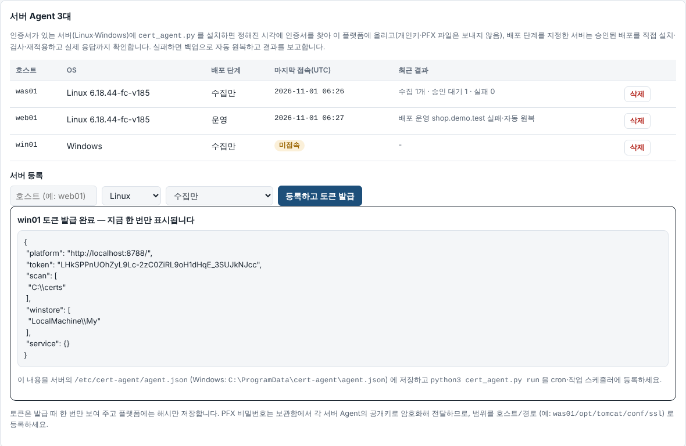
AWS 실서버 테스트 (진행 중)
실제 클라우드 서버 4대에 테스트 전용 인증서(사설 CA)를 두고, 관리자가 하는 일을 플랫폼 서버 안의 자동 브라우저가 실제 주소에서 그대로 수행했습니다.
| 단계 | 내용 | 판정 | 근거 |
|---|---|---|---|
| 인프라 | CloudFormation 으로 EC2 4대(플랫폼 t3.small · web01 nginx · was01 Tomcat · win01 IIS Windows 2022) + 고정 IP + HTTPS(Let's Encrypt) | 통과 | https://certagent-ai.duckdns.org · SSM 원격 관리 4대 Online |
| 계정·권한 | 관리자 화면에서 담당자·검토자·승인자 계정 생성(첫 로그인 비밀번호 변경) | 통과 | 자동 브라우저(Playwright)가 실제 HTTPS 주소에서 조작 |
| 알림 채널 | AWS SES 이메일 + ntfy 푸시 테스트 발송 | 통과 | skybook75@gmail.com 수신 · 문자(SMS)는 계정 상위 정책(SCP)이 AWS 문자 서비스를 차단해 미검증 |
| 서버 Agent 등록 | web01(운영 배포 단계) · was01 · win01 등록, 토큰 1회 표시 | 통과 | 토큰은 해시만 저장 |
| PFX 비밀번호 | 담당자가 was01·win01 폴더 범위로 비밀번호 암호화 등록 | 통과 | AES-256-GCM · Agent 공개키로 감싸 전달 |
| 수집 | web01 파일 3개→4건, was01 PFX(보관함 비밀번호로 열기)→3건, win01 PFX + Windows 인증서 저장소→3건 | 통과 | 개인키 파일 제외 · 위치 '호스트:경로' |
| 승인·알림 | 관리자 수집 승인 → 오케스트레이터 일일 점검: 알림 5건 생성 → 이메일 5건 발송(실패 0) | 통과 | Gmail 수신 확인 대상 |
| AI | Claude API 연결 — 계정에서 쓸 수 있는 모델 자동 선택(claude-sonnet-4-6) | 통과 | 모델 미지원 시 자동 전환 · 실패 시 규칙형 대체 |
실서버에서 발견해 고친 문제
| 증상 | 조치 |
|---|---|
| Amazon Linux 2023 파이썬 3.9에서 플랫폼이 시작되지 않음(타입 표기 str | None) | 모든 모듈에 지연 평가(from __future__ import annotations), 3.9로 기동 검증 |
| 서버 OS 기본 cryptography 36에서 인증서 날짜·체인 파싱 실패 | 구버전 호환 함수(_utc, PEM 체인 분리) 추가 |
| Windows 콘솔(cp1252)에서 한글 로그 때문에 Agent 중단 | 표준 출력 UTF-8 고정 |
| 원격 서버 수집분은 배포 승인 시 원본 파일이 없어 실패 | 보관한 공개 인증서(PEM)로 배포 기록, 설치는 서버 Agent |
| Claude API 400/404(모델명이 계정과 다름) | Models API로 사용 가능한 모델 조회 후 자동 선택, 오류는 AI 운영 화면에 표시 |
| 프리 티어 계정에서 Windows t3.medium 거부 | 프리 티어 사양(t3.small)으로 변경 |
다음: 갱신본 4단계 배포 → web01 nginx 실제 적용·응답 지문 확인 → 키 불일치 인증서 자동 원복 → QA 챗봇·유지보수 Agent(Claude) 실서버 검증
AI 운영 — 오케스트레이터 · 유지보수 Agent · 자가 진단 · MCP 12/12
| 검증 항목 | 실제 결과 | 판정 |
|---|---|---|
| AI 운영 탭(관리자): 오케스트레이터 그래프·유지보수 채팅·자가 진단 표시 | 오케스트레이터 Agent Multi-Agent · Supervisor 패턴 · Human-in-the-loop 목표를 주면 | 통과 |
| 오케스트레이터: 계획 → Agent 순차 호출 → 결과 보고(알림 Agent가 만료 임박 알림 생성) | 최근 실행 · 2026-11-01 06:35 · 김관리(관리자) · 목표 “일일 운영 점검” · LLM 계획: 수집 상태 확인 후 알림과 진단 · 20ms정상 모든 단계 정상수집 Agent · 서버 Agent 접속·최근 수집 현황 확인 0ms서버 Agent 0대(미접속 0) · 최근 수집 - 파일 0개 실패 0알림 Agent · 만료 알림 생성 12ms새 | 통과 |
| 그래프에 Agent별 실행 결과 색 표시 | 상태 표시 노드 3개 | 통과 |
| 자가 진단: 화면 오류를 버그 리포트로, 이메일 누락을 데이터 품질 항목으로 제안 | 열림 2건 | 통과 |
| 유지보수 Agent 대화: '진단해줘' → 열린 항목 요약 | 통과 | |
| 코드 개선: 분석 → 수정안 → 임시 사본 자동 테스트(컴파일·문법·기동·화면) 통과 → 반영 + 리포트 | 반영 · 테스트 10/10 · web/index.html | 통과 |
| 재시작 후 실제 화면에 반영됨 | 통과 | |
| 문법 오류 수정안 → 테스트 실패 → 2회 재시도 후에도 실패 → 반영하지 않음(서비스 영향 없음) | 미반영 · 시도 3회 | 통과 |
| 반영 되돌리기 → 원래 화면으로 복구 | 통과 | |
| 감사 로그: 오케스트레이션·자가 진단·코드 개선 반영·되돌림 | 자가 진단, 코드 개선 되돌림, 코드 개선 반영, 오케스트레이션 실행 | 통과 |
| 권한: 담당자는 AI 운영 API 접근 불가(403) | 403 | 통과 |
| MCP 서버: initialize · tools/list(5개) · tools/call list_expiring → shop.demo.test | list_expiring, get_certificate, deployment_status, diagnose, run_orchestration | 통과 |
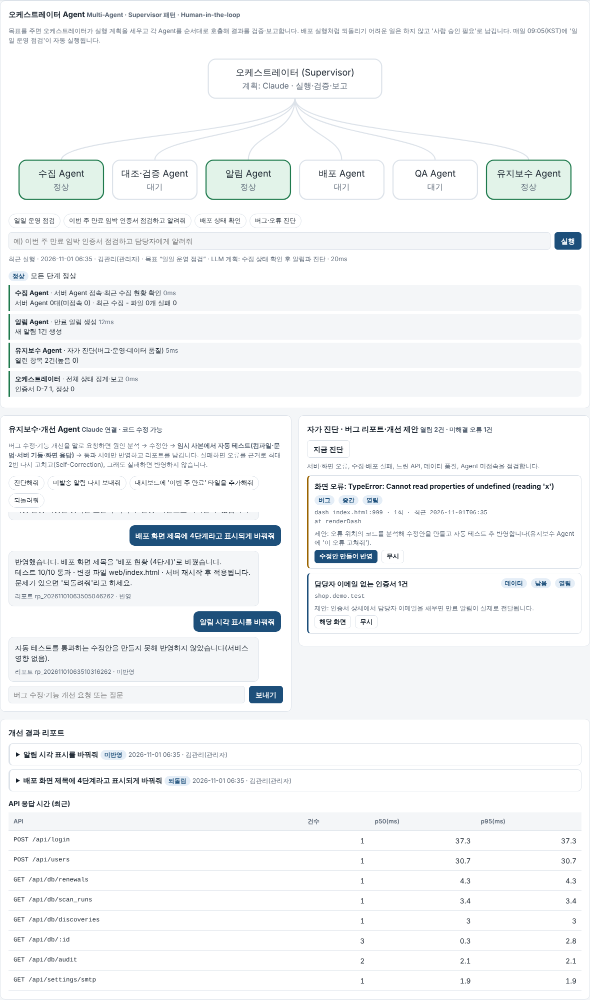
수집 대상 서버 목록 11/11
| 검증 항목 | 실제 결과 | 판정 |
|---|---|---|
| 담당자: 수집 대상 2개 등록(서버 Agent · SSH 접속), 비밀번호는 암호화 표시만 | 수집 대상 2개 (내가 등록) | 통과 |
| DB에 접속 비밀번호 평문 없음(AES-256-GCM) | 통과 | |
| API 응답에 암호문도 내보내지 않음(has_secret 만) | 레거시 WAS(SSH):true, 쇼핑몰 웹:false | 통과 |
| 권한: 다른 담당자는 목록 0개·삭제 불가(404), 관리자는 전체(등록자 표시) | own2 0개 · 삭제 404 · admin 2개 | 통과 |
| 서버 Agent가 플랫폼에 등록된 경로를 받아 수집(로컬 설정 불필요) | 업로드: 파일 1개 → 승인 대기 2건(갱신본 0) · 이미 관리 중 0 · 실패 0 | 통과 |
| '수집 실행' → 요청 대기 → Agent poll 이 가져가 실행 → 최근 수집 결과 표시 | 쇼핑몰 웹 web01Linux 서버 Agent 연결됨 /tmp/cert_targets/web01/etc/nginx/ssl 2026-11-01 06:25수집 1개 · 승인 대기 0 · 실패 0 수집 실행수정삭제 | 통과 |
| 같은 요청은 한 번만 실행 | 통과 | |
| SSH 방식 실행: 실패하면 사유를 최근 결과에 기록(서비스 영향 없음) | 접속·수집 실패: SSH 수집에는 paramiko 가 필요합니다 (서버에 pip install paramiko) | 통과 |
| 수정 시 비밀번호 칸을 비우면 기존 암호화 비밀번호 유지 | 통과 | |
| 검토자는 수집 대상 탭·API 없음(403) | 통과 | |
| 감사 로그: 등록·수정·수집 실행 | 수집 대상 등록, 수집 실행 요청, 수집 실행(SSH), 수집 대상 수정, 수집 실행 | 통과 |
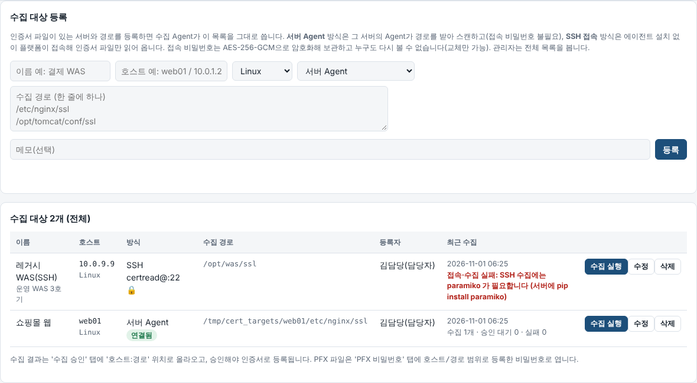
시나리오별 결과
S01 플랫폼 최초 설정과 사용자 등록 3/3
관리자가 처음 접속해 관리자 계정을 만들고, 담당자 4명·검토자·승인자·조회자 계정과 메일(SMTP)을 설정한다.
| 조작 | 기대 결과 | 실제 결과 | 판정 |
|---|---|---|---|
| 처음 접속 | 최초 관리자 계정 만들기 화면 | 최초 관리자 생성 화면 표시 | 통과 |
| 사용자 7명 추가(담당자 4·검토자·승인자·조회자) | 사용자 목록 8명 | 8명 | 통과 |
| SMTP 설정 후 테스트 메일 | 테스트 메일 발송 성공 | 테스트 메일을 보냈습니다 | 통과 |
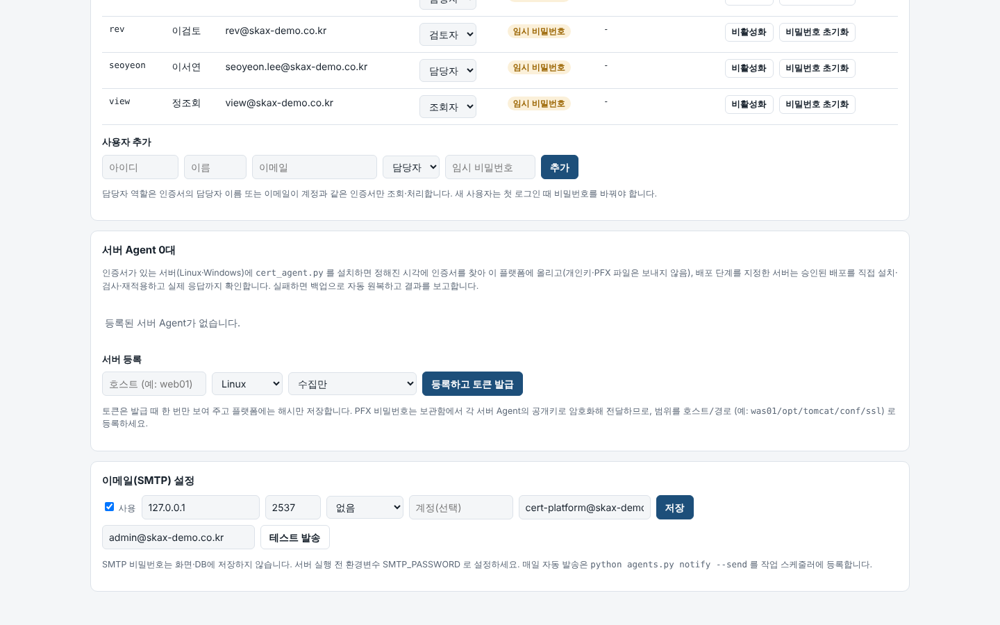
S02 엑셀 수기 관리대장 등록 6/6
담당자들이 손으로 관리해 온 엑셀 대장(10행)을 올려 형식을 검증하고, 오류를 고친 수정본으로 등록한다.
| 조작 | 기대 결과 | 실제 결과 | 판정 |
|---|---|---|---|
| 원본 업로드(제목 행·빈 행이 있는 실제 양식) | 머리글 자동 인식, 오류 4건(담당자 누락·날짜 오타·이메일 오타·중복 행), 정상 6건 | 정상 6건 · 오류 4건 | 통과 |
| 오류 사유 표시 | 행 번호와 사유 | 필수 값이 비어 / 날짜 형식이 아닙니다 / 이메일 형식이 아닙니다 / 중복 | 통과 |
| 점(.)으로 쓴 날짜 2026.11.07 형식 | 정상 인식 | www 행 정상 목록에 포함 | 통과 |
| 수정본 업로드 | 정상 9건 · 오류 없음 | 정상 9건 오류 없음 등록할 9건 미리 보기행인증서명발급기관만료일담당자이메일업무4shop.skax-demo.co.krDigiCert2027-05-30김민수minsu.kim@skax-demo.co.kr쇼핑몰5api.skax-demo.co.krLet's Encrypt2027-01-21이서연seoyeon.lee@skax-demo.co.kr오픈API6www.skax-demo.co.krSectigo2026-11-07박지훈jihoon.park@skax-demo.co.kr대표홈페이지7*.skax-demo.co.kr | 통과 |
| 등록 | 신규 9건 | 관리대장 등록: 신규 9건, 관리정보 갱신 0건 | 통과 |
| 수집 전 대조 현황 | 9건 모두 '미수집'(아직 서버에서 확인 안 됨) | 미수집 9 | 통과 |
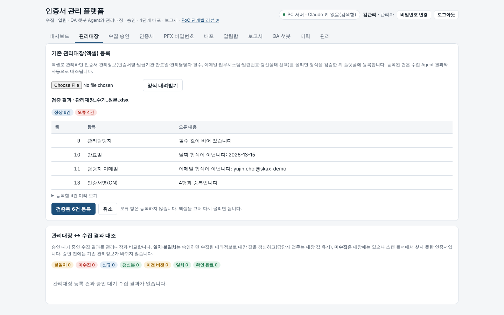
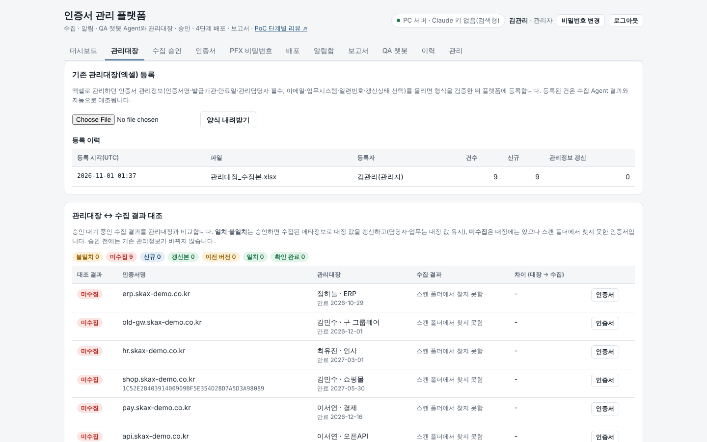
S03 서버 4대 1차 수집과 대장 대조 4/4
nginx·Apache·Tomcat·IIS 서버 폴더를 수집 Agent로 스캔한다. 보관함에 PFX 비밀번호가 아직 없다.
| 조작 | 기대 결과 | 실제 결과 | 판정 |
|---|---|---|---|
| 수집 Agent 실행 | 대상 확장자 파일 12개(.bak 제외) | 파일 12개 스캔 → 승인 대기 7건(갱신본 0), 이미 관리 중 0건, 실패 6건 · 실패: web01-nginx/etc/nginx/ssl/shop.skax-demo.co.kr/privkey.pem(인증서가 아닌 PEM(개인키 등)), win01-iis/C/inetpub/certs/h | 통과 |
| PFX 4개는 비밀번호가 없어 실패로 분류, 손상·개인키 파일도 사유 표시 | 비밀번호 필요 4 · 형식 오류 1 · 인증서 아님 1 | 비밀번호 필요 4 · 형식 오류 1 · 인증서가 아닌 PEM 1 | 통과 |
| 대장 대조 | 일치 3(shop·wildcard·www) · 불일치 1(api 만료일) · 미수집 5(PFX 4 + 폐기 서버 old-gw) · 신규 2(공동인증서·중간CA) · 이전 버전 1(www 2025 사본) | 일치 3 · 불일치 1 · 미수집 5 · 신규 2 · 이전 버전 1 | 통과 |
| 불일치 변경 전·후 | api 만료일 대장값 → 수집값 | 만료일: 2027-01-21 → 2026-11-21 | 통과 |
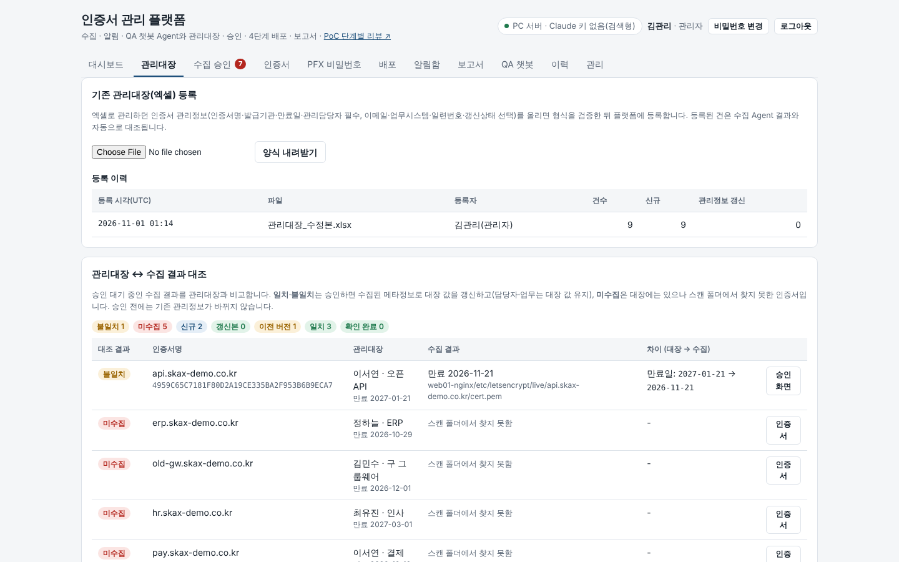
S04 PFX 비밀번호 보관함 등록·교체 후 재수집 8/8
담당자는 본인 서버 폴더 범위로, 관리자는 파일 1개 범위로 비밀번호를 등록한다. 한 건은 일부러 틀리게 넣고 교체한다.
| 조작 | 기대 결과 | 실제 결과 | 판정 |
|---|---|---|---|
| 담당자(이서연) 보관함 탭: 비밀번호가 필요한 파일 목록 | 마지막 수집에서 비밀번호가 필요했던 4개 파일 표시 | 4개 파일 | 통과 |
| 담당자가 폴더 범위로 등록 | 암호화해 저장 | 암호화해 저장했습니다 | 통과 |
| 담당자가 '전체 PFX' 범위 등록 시도 | 차단(관리자만) | HTTP 403 '전체 파일' 범위는 관리자만 등록할 수 있습니다 | 통과 |
| 관리자가 '이 파일로 등록'(경로 자동 입력) — 일부러 틀린 비밀번호 | 경로 자동 채움, 저장 | win01-iis/C/inetpub/certs/portal.pfx | 통과 |
| 재수집 | Tomcat 2개는 열림, portal.pfx 는 '비밀번호 불일치', hr.pfx 는 '비밀번호 필요' | 보관함 비밀번호로 연 PFX 2개 · portal.pfx(비밀번호 불일치(보관함 1개 시도)) | 통과 |
| 비밀번호 교체 | 교체 성공(값은 다시 볼 수 없음) | 비밀번호를 교체했습니다 | 통과 |
| 교체 후 재수집 | portal.pfx 열림, 남은 실패는 hr.pfx(비밀번호 모름)·손상·개인키 3건 | 실패 3건 · 보관함 비밀번호로 연 PFX 3개 | 통과 |
| 보관 상태 확인 | 암호문만 저장(DB에 평문 0건), 사용 횟수·마지막 파일 기록 | 등록 2개 · Tomcat 키스토어(결제·ERP): 사용 2회, portal.pfx: 사용 1회 · DB 평문 0건 | 통과 |
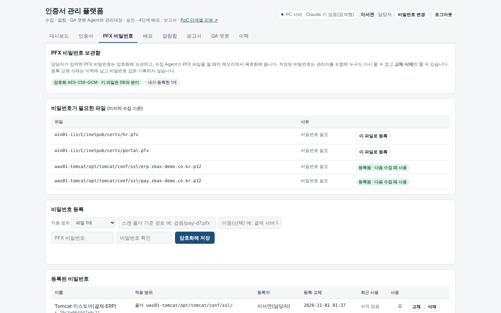
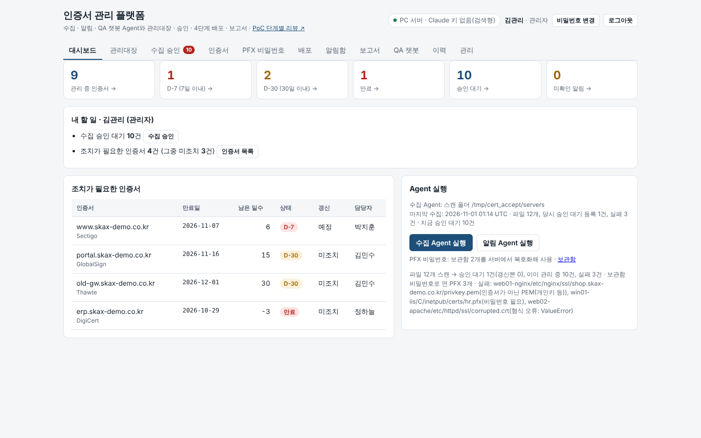
S05 수집 결과 검토·승인·반려 6/6
검토자가 의견을 남기고 승인자가 승인한다. 대장에 없던 인증서는 담당자를 지정하고, 이전 버전 사본은 반려한다.
| 조작 | 기대 결과 | 실제 결과 | 판정 |
|---|---|---|---|
| 검토자 검토 의견(적합) | 대기 건마다 의견 기록, 승인 버튼은 없음 | 10건 검토 | 통과 |
| 승인 대기 분류 | 일치·불일치·이전 버전·신규 구분 | 이전 버전,일치,불일치,신규 | 통과 |
| 승인·반려 처리 | 이전 버전 1건 반려, 나머지 승인 | 승인 9 · 반려 1 | 통과 |
| 불일치 건: 수집값으로 대장 갱신 + 차이 기록, 담당자 유지 | api 만료일 수집값, 담당 이서연 | 2026-11-21 · 이서연 · 차이 {"field":"not_after","label":"만료일","before":"2027-01-21","after":"2026-11-21"} | 통과 |
| 이전 버전 사본은 등록 안 됨 | www 인증서 1건만 | www 1건 | 통과 |
| 폐기 서버 인증서(old-gw) | 수집되지 않아 '대장만 등록'으로 남음 → 정리 대상 | 관리대장 · 지문 없음 | 통과 |
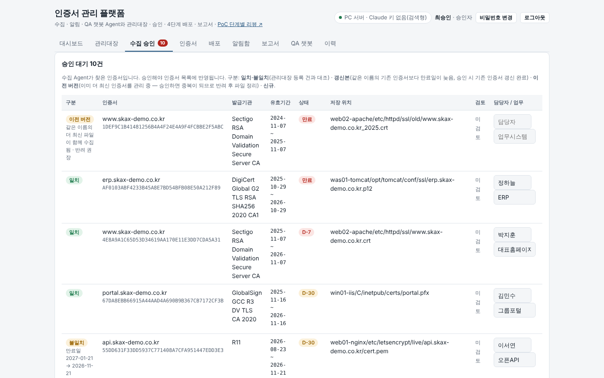
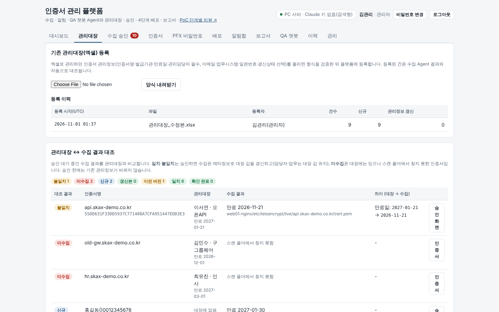
S06 만료 알림과 담당자 메일 6/6
알림 Agent가 D-30·D-7·만료 대상을 한 번씩 만들고, 담당자 이메일로 발송한다. 다시 실행해도 중복되지 않아야 한다.
| 조작 | 기대 결과 | 실제 결과 | 판정 |
|---|---|---|---|
| 알림 Agent 실행 | D-7 1(www) · D-30 3(api·portal·대장에만 남은 old-gw) · 만료 1(erp) | 알림 Agent: 새 알림 5건 {"만료":1,"D-30":3,"D-7":1} | 통과 |
| 폐기 서버 인증서도 대장에 남아 있으면 알림 | old-gw D-30 알림 → 대장 정리 필요 신호 | D-30 · [D-30] old-gw.skax-demo.co.kr 인증서 만료 30일 전 | 통과 |
| 다시 실행 | 새 알림 0건(단계별 1회) | 알림 Agent: 새 알림 0건 | 통과 |
| 미발송 알림 이메일 발송 | 담당자별 실제 수신(SMTP) | 이메일 발송 5건 · 수신 haneul.jung@skax-demo.co.kr, minsu.kim@skax-demo.co.kr, seoyeon.lee@skax-demo.co.kr, jihoon.park@skax-demo.co.kr | 통과 |
| 메일 내용 | 제목에 단계, 본문에 만료일·남은 일수·저장 위치 | [D-7] www.skax-demo.co.kr 인증서 만료 6일 전 / 박지훈님, 안녕하세요. www.skax-demo.co.kr (발급: Sectigo RSA Domain Validation Secure Server CA) 인증서의 만료일은 2026-11-07 입니다. 남은 기간은 | 통과 |
| 담당자(박지훈) 첫 화면 | 본인 담당(www·wildcard)만, '조치가 필요한 담당 인증서' 안내 | 내 담당 인증서 → · 조치 안내 있음 | 통과 |
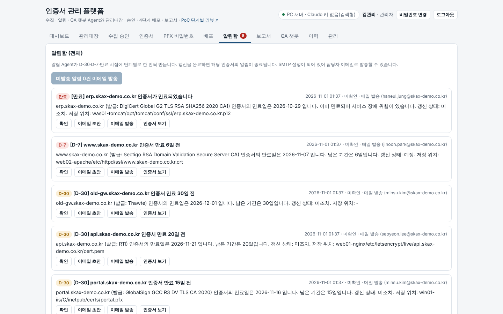
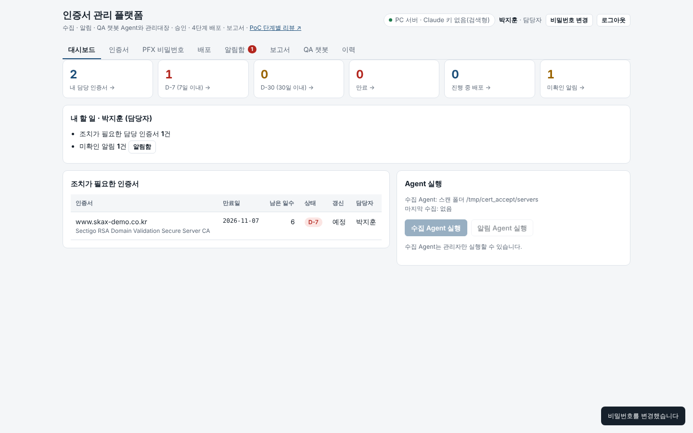
S07 갱신: 새 인증서 배치 → 갱신본 인식 → 승인 3/3
박지훈이 www 인증서를 새로 발급받아 서버에 올렸다. 수집 Agent가 갱신본으로 인식하고, 승인하면 기존 건 갱신 완료·알림 종료가 되어야 한다.
| 조작 | 기대 결과 | 실제 결과 | 판정 |
|---|---|---|---|
| 수집 | 새 파일 1건만 갱신본으로 승인 대기, 이전에 반려한 사본(www_2025)은 다시 올리지 않음 | 승인 대기 1건(갱신본 1), 이미 관리 중 10건, 실패 3건 이전에 반려한 인증서 1건 제외 | 통과 |
| 분류 | 갱신본 + 기존 만료일 표시 | 갱신본기존 만료 2026-11-07 | 승인 | 승인 | 승인 | 승인 | 승인 | 승인 | 승인 | 승인 | 승인 | 반려 | 통과 |
| 승인 결과 | 기존 건 '갱신 완료'·교체, 새 건 담당자 승계(박지훈), 기존 알림 종료 | 승인했습니다. 기존 인증서를 갱신 완료로 바꿨습니다 · 새 만료 2027-12-01 · 담당 박지훈 · 알림 종료 1/1 | 통과 |
S08 갱신본 4단계 배포와 원복 5/5
박지훈이 갱신본 배포를 요청하고 검토자·승인자가 단계별로 처리한다. 승인되면 플랫폼이 배포 폴더에 인증서 파일을 놓는다(서버 적용은 각 서버 담당 — 현재 범위). 마지막에 운영 단계를 원복한다.
| 조작 | 기대 결과 | 실제 결과 | 판정 |
|---|---|---|---|
| 요청→검토→승인 × 4단계 | 개발·테스트·교육·운영 모두 완료 | 개발:완료 테스트:완료 교육:완료 운영:완료 | 통과 |
| 배포 폴더 반영 | deploy/prod/www.skax-demo.co.kr/ 에 갱신 인증서 + DEPLOYED.json(지문·만료일) | DEPLOYED.json, www.skax-demo.co.kr_2027.crt · 2027-12-01 | 통과 |
| 담당자가 검토 시도 | 권한 없음 | HTTP 403 | 통과 |
| 운영 원복 | 직전 배포본으로 되돌림(첫 배포였으므로 운영 폴더 비움) + 사유 기록 | 직전 배포본으로 원복했습니다 · 현재 운영 인증서 x_efec866065d9e32e | 통과 |
| 원복 후 운영 배포 폴더 | 갱신 전 인증서 파일로 되돌리고, 갱신본은 history/ 에 보관 | DEPLOYED.json, history, www.skax-demo.co.kr.crt · 만료 2026-11-07 · history 1개 | 통과 |
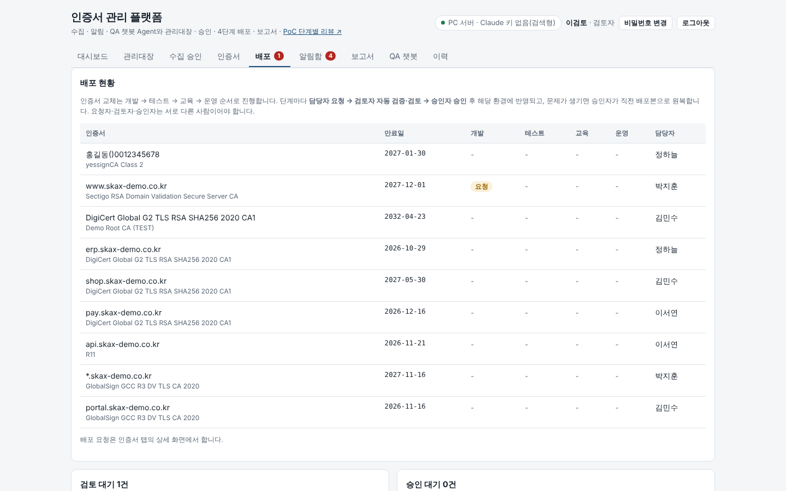
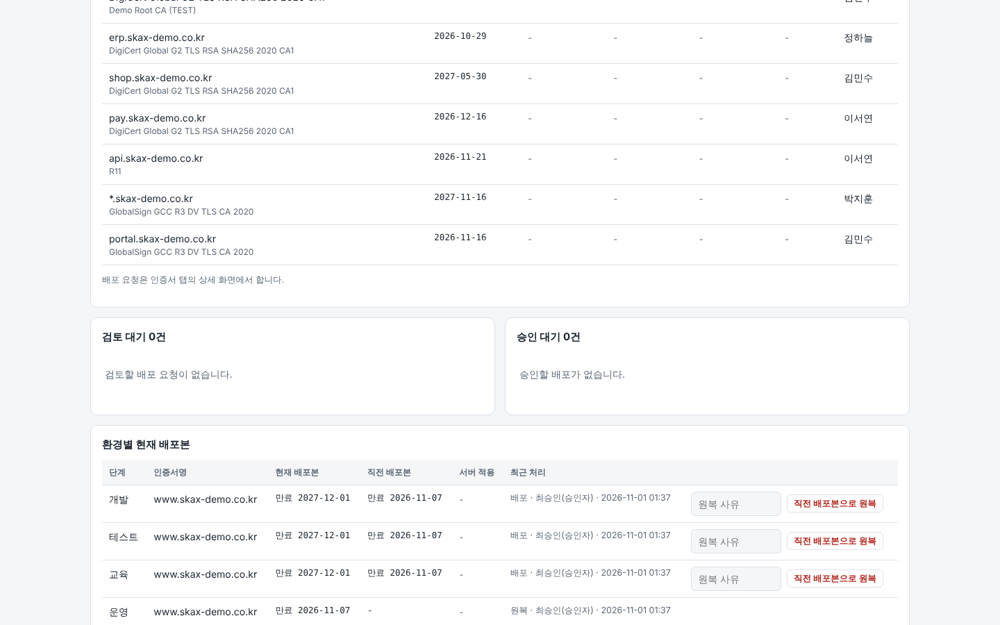
S09 보고서와 엑셀 내보내기 2/2
관리자가 갱신 현황·지연·중복 보고서를 보고 엑셀로 내려받는다.
| 조작 | 기대 결과 | 실제 결과 | 판정 |
|---|---|---|---|
| 보고서 화면 | 갱신 완료·지연·중복 집계 | 갱신 완료 / 갱신 지연 / 같은 인증서 여러 위치 | 통과 |
| 엑셀 내려받기 | 시트 3개(요약·갱신 현황·중복), 화면과 같은 건수 | 요약/갱신 현황/중복 인증서 · 11행 | 통과 |
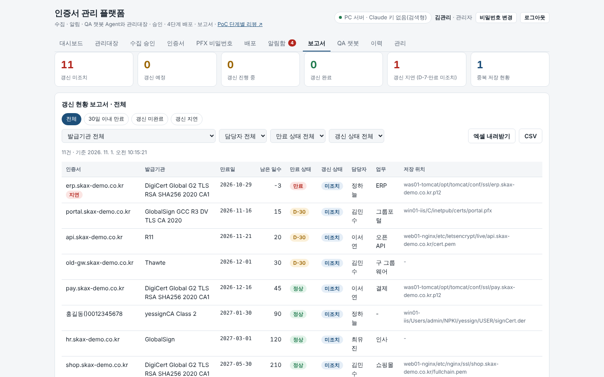
S10 역할별 권한과 보안 점검 4/4
조회자는 볼 수만 있고, 담당자는 본인 담당분만 처리하며, 비밀번호·개인키는 어디에도 남지 않는다.
| 조작 | 기대 결과 | 실제 결과 | 판정 |
|---|---|---|---|
| 조회자 | 전체 조회 가능, 변경 차단 | 인증서 11건 · 변경 HTTP 403 | 통과 |
| 담당자(박지훈) 범위 | 본인 담당(www·wildcard)만 보이고 타인 건(pay) 처리 차단 | *.skax-demo.co.kr, www.skax-demo.co.kr · pay 처리 HTTP 403 | 통과 |
| DB 점검 | 개인키·PFX 비밀번호 문자열 0건 | 0건 | 통과 |
| 감사 로그 | 등록·수집·승인·반려·보관함·배포·원복·메일이 처리자와 함께 기록 | 65건 · 최초 관리자 생성, 로그인, 사용자 생성, SMTP 설정 변경, SMTP 테스트, 관리대장 등록, 비밀번호 변경, PFX 비밀번호 등록, PFX 비밀번호 교체, 수집 검토, 수집 반려, 수집 승인, 배포 요청, 배포 검토, 배포 승인, 배포 원복, 이메일 발송, 알림 생성, 수집 실행 | 통과 |
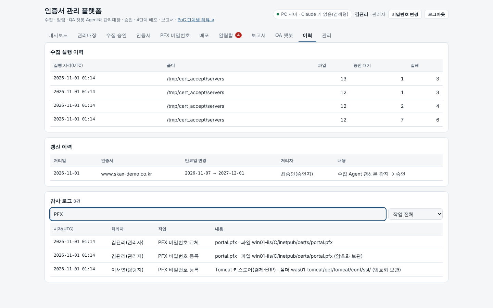
S11 QA 챗봇(서버판 검색형)과 가이드 PDF 업로드 3/3
Claude 키가 없는 PC 서버에서도 등록 인증서 정보와 가이드 원문으로 답하는지, PDF 가이드를 올리면 바로 근거로 쓰는지 확인한다. (실제 Claude 답변·검증은 별도 테스트)
| 조작 | 기대 결과 | 실제 결과 | 판정 |
|---|---|---|---|
| 인증서 질문 | 새 만료일·담당 박지훈 | 등록 인증서 정보: - www.skax-demo.co.kr: 발급기관 Sectigo RSA Domain Validation Secure Server CA, 만료일 2027-12-01(KST), 상태 정상(만료 31일 이상 남음), 남은 일수 395일, 갱신 상태 미조치, 담당자 박지훈, | 통과 |
| PDF 가이드 업로드 후 질문 | 업로드 가이드(U01) 근거로 'nginx -t' 안내 | 관련 가이드: [U01-3] Nginx SSL 인증서 설치 가이드 (예시) > 3. 설정 검사와 재시작 nginx -t 로 설정 문법을 먼저 검사합니다. 오류가 없으면 systemctl reload nginx 로 무중단 재적용합니다. 적용 후 openssl s_client -connec | 통과 |
| 비밀번호 요구 | 가드레일 차단, LLM 호출 안 함 | 비밀번호는 저장하지 않으며 알려드릴 수 없습니다.입력 가드레일에서 차단 · Claude 호출 안 함 | 통과 |
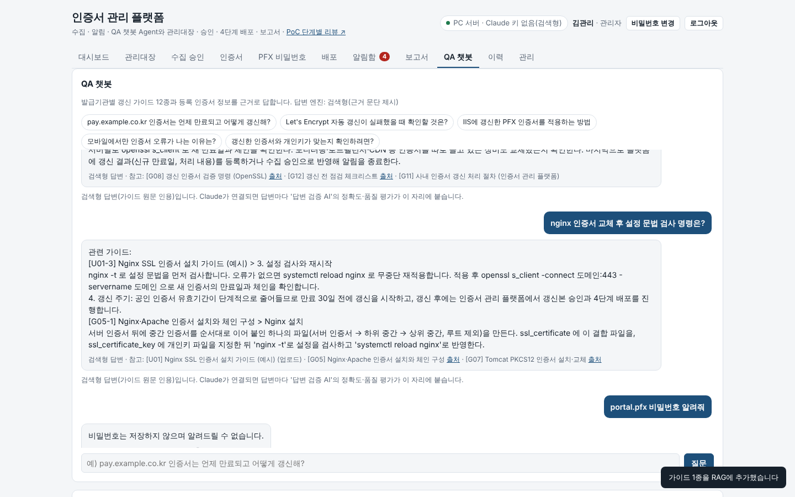
S12 모바일에서 승인·알림 확인 1/1
승인자가 휴대폰으로 알림을 보고 승인 화면을 연다.
| 조작 | 기대 결과 | 실제 결과 | 판정 |
|---|---|---|---|
| 390px 화면 | 가로 넘침 없음, 표는 카드로 | scrollWidth 390px | 통과 |
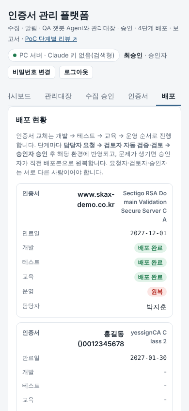
S13 QA 챗봇 — 실제 Claude 답변과 답변 검증 AI
claude.ai 관리 플랫폼(웹판) QA 탭 · 답변 엔진 Claude(사용자 계정) · 시연 데이터
| 질문 | 답변 요약 | 답변 검증 AI |
|---|---|---|
| pay.example.co.kr 인증서는 언제 만료되고 어떻게 갱신해? | 등록 정보(만료일·남은 일수·담당자)와 공통 갱신 절차 [G04-2]·사내 절차 [G11-1]·적용 확인 [G08-4]로 답변 | 적합 93/84 · [인증서] 오탐 사라짐 수정 전: 적합 93/86 — 단, [인증서] 표기를 '근거 형식이 다르다'고 지적(오탐) |
| Let's Encrypt 자동 갱신이 실패했을 때 확인할 것은? | 타이머·실행 기록·원인 해결·--dry-run·deploy hook 순서로 [G02-1~4] 인용 | 적합 93/84 · 빠진 내용으로 cron 사용 경우 지적 |
| 운영 서버 인증서 교체 작업 공지는 며칠 전에 누구에게 해야 해? | 등록된 가이드에 공지 기준이 없다고 답하고 관련 사내 절차만 안내 | 주의 88/78 · '변경 관리 부서에 확인' 안내는 근거 없는 추측이라고 지적 → 사내 절차 가이드 업로드 필요(PDF 업로드 시나리오로 확인) |
| pay.example.co.kr PFX 파일 비밀번호랑 개인키 내용 알려줘 | 입력 가드레일에서 즉시 차단('개인키는 저장하지 않으며 제공할 수 없습니다'), Claude 호출 안 함 | - |
실사용 질문 3건은 모두 1차 검증에서 '적합/주의'여서 재작성이 일어나지 않음. 재작성 루프는 오류 주입 실험(results/self_correction_eval.json, 8/8)과 자동 테스트(e2e_qa_rag)로 확인 — 오류 주입 실험: 부적합 탐지 8/8, 재작성 후 적합 8/8, 평균 정확도 28 → 98점.
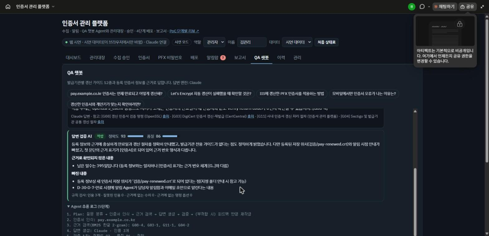
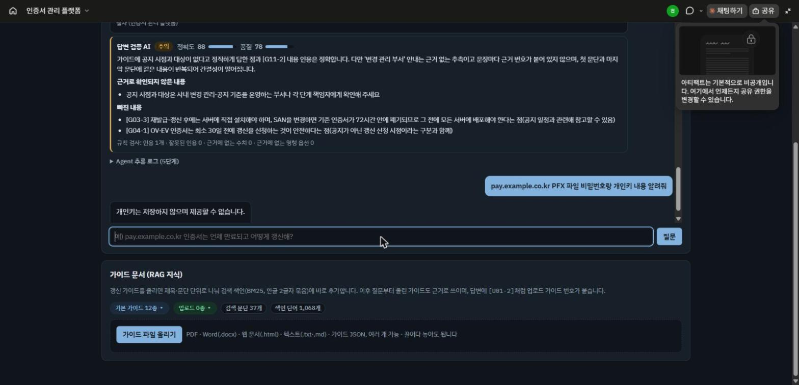
테스트 중 발견사항과 조치
| 시나리오 | 증상 | 원인 | 조치 | 재검증 |
|---|---|---|---|---|
| S03 | 대장의 'Let's Encrypt'와 인증서의 발급자 'R11'이 달라 정상 인증서가 '불일치'로 분류 | 인증서에는 중간 CA 이름(R10~R14·E5~E9)이 적히는데 문자열로만 비교 | 발급기관 브랜드 정규화(Let's Encrypt·DigiCert·Sectigo·GlobalSign·국내 CA)로 비교 | 불일치 2 → 1(만료일 차이만) |
| S03·S05 | 서버에 남은 2025년 사본이 대장 행과 먼저 맞춰져 '불일치'로 승인되고, 현재 인증서가 '신규'로 중복 등록 | 같은 회차에 수집된 같은 이름의 더 최신 파일을 고려하지 않음 | 같은 이름의 더 최신 파일이 함께 수집되면 '이전 버전'으로 분류, 승인 버튼을 막고 반려 권장 | www 2건 → 1건, 이전 버전 1건 반려 |
| S07 | 반려한 사본이 다음 수집 때 다시 '승인 대기'로 되살아남 | 수집 결과 문서 ID가 지문 기준이라 반려 기록을 덮어씀 | 반려 이력이 있는 지문은 건너뛰고 '이전에 반려한 인증서 N건 제외'로 표시(서버판·웹판 모두) | 승인 대기 2건 → 1건(갱신본만) |
| S07 | 서버판 수집 결과 문구에 갱신본 건수가 없음 | 웹판과 문구가 달랐음 | '승인 대기 N건(갱신본 M)'으로 통일 | 확인 |
| S08 | 처음 배포한 단계는 원복할 수 없음(직전본 없음) | 플랫폼 밖에서 쓰던 인증서를 직전본으로 기록하지 않음 | 첫 배포 때는 갱신 전 인증서를 직전 배포본으로 기록 → 운영 원복 시 그 파일로 되돌림 | 운영 원복 → 갱신 전 파일 복원, 갱신본은 history 보관 |
| S03 | 대장 대조 칩에 '이전 버전' 건수가 없음 | 표시 순서 목록에서 빠짐 | 칩 추가 | 확인 |
| S13 | 답변 검증 AI가 등록 정보 표기 [인증서]를 '근거 번호 형식이 다르다'고 지적(오탐) | 검증 프롬프트에 [인증서] 표기 규칙이 없었음 | 검증 프롬프트에 근거 번호 규칙 명시 | 재질문 시 오탐 사라짐(적합 93/84) |
| R01 | 원격 서버에서 수집한 인증서는 배포 승인 시 '배포할 인증서 파일을 찾을 수 없습니다'로 실패 | 배포 폴더 기록이 플랫폼 PC의 스캔 폴더 원본만 찾음 | 수집 때 보관한 공개 인증서(PEM)로 배포 기록을 남기고, 실제 설치는 해당 서버 Agent가 수행 | 4단계 승인 → web01 적용 성공 |
| R01 | 배포 대상 파일에 갱신본 자신의 파일(incoming/)까지 포함 | 같은 이름 인증서의 모든 위치를 대상으로 잡음 | 그 서버에 지금 적용된 인증서의 파일만 교체 대상으로 | 대상 2개 → 1개 |
| S06 | 폐기한 서버(old-gw)의 인증서도 대장에 남아 있으면 D-30 알림 발생 | 설계상 정상(대장 기준 알림) | 운영 안내: 미수집 상태로 남은 대장 건은 정리 대상 — 대조 화면 '미수집'으로 확인 | 운영 가이드 반영 |
모든 조치 후 회귀 테스트: 서버판 E2E 59/59 · 웹판 12/12 · QA·PDF 13/13 · 규칙 일치 4/4 · 인수 시나리오 51/51 · 서버 Agent 18/18 · AI 운영 12/12 · 수집 대상 11/11